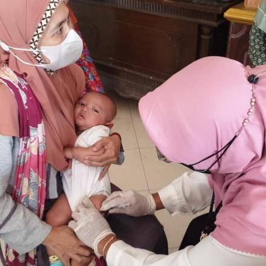
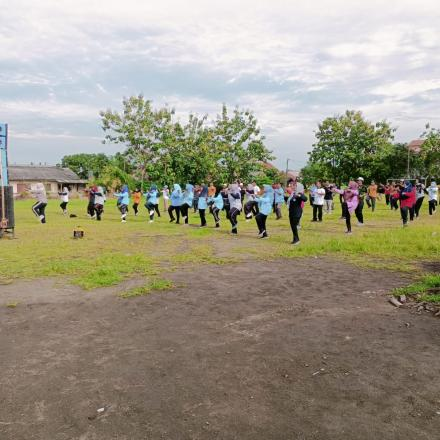
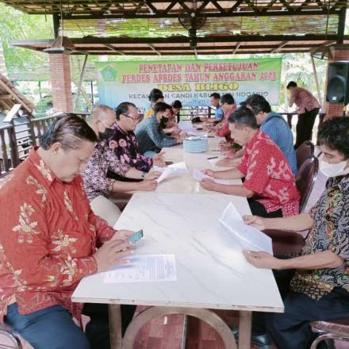

 Posyandu Balita By Mochammad Syaifuddin |11 Januari 2023 dilaksanakan kegiatan posyandu Balita dg beberapa agenda diantaranya adalah pemberian PMT bagi balita, imunisasi serta pendataan kesehatan Balita dan berbagai macam permainan anak utk meningkatkan mutu kesehatan Selengkapnya
 Senam SKJ By Mochammad Syaifuddin |11 Januari 2023 Kegiatan berjalan dengan sukses, meriah dan penuh semangat sehingga sasaran dari kegiatan ini yaitu untuk menjaga dan meningkatkan kualitas kesehatan masyarakat tercapai. Selengkapnya
 Penetapan APBDes 2023 By Mochammad Syaifuddin |31 Desember 2022 Pemerintah Desa Bligo bersama dengan BPD Desa BLIGO Telah melaksanakan "PENETAPAN & PERSETUJUAN PERDES APBDES TA. 2023 PEMDES DESA BLIGO" Selengkapnya